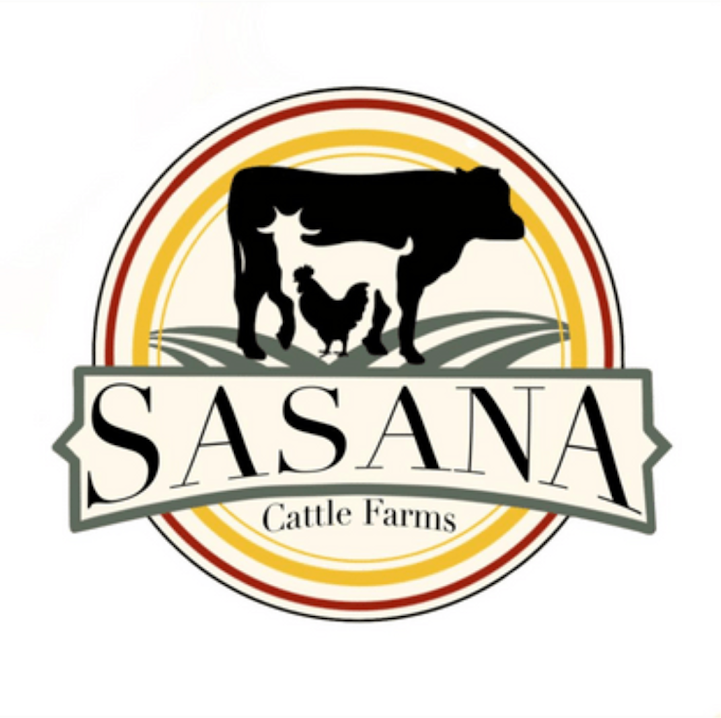

SaSaNa Cattle Farm
About SaSaNa Cattle Farm:
Thank you for visiting this website,SaSaNa Cattle Farm was founded in 2020 with a mission to be pioneers in identifying and developing best goat breed that is suitable for Quality Meet, We involve the raising and breeding of domestic goats especially we Deal with Pure Nati, Nati Goats primarily raised for meat production, We are engaged in breeding and research on local Breed Nati goats for a long time. Our mission is to produce high quality meat, fast growing, genetically superior Nati Goat breeding stock and supply to the up and coming goat farms.
About Us ! Photo Gallery ! Contact Us !